SCW + liquid metals
Supercritical water, sodium, lead, LBE, and supporting solid-material properties under a common interface.
Nuclear Engineering · University of Florida
I build engineering software when I need a tool that does not exist yet. Current work spans PINTHAC, GPU thermophysical properties, neural surrogates for fuel-pin analysis, and physics-informed modeling of runaway electrons in tokamaks.
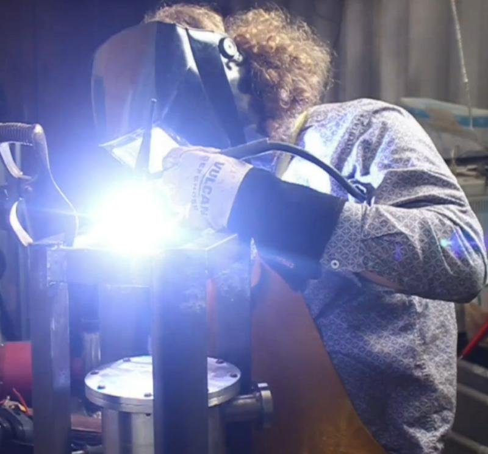
01 / Fusion plasma physics research
Undergraduate research in the McDevitt Lab at the University of Florida. I am developing a physics-informed neural-network solver for the adjoint drift-kinetic equation and using it to study how magnetic trapping changes runaway-electron probability.
Start from the adjoint drift-kinetic equation for runaway probability.
Represent the probability field with a differentiable neural network over momentum and geometry coordinates.
Train against the kinetic residual together with the physical boundary and periodicity conditions.
Inspect residual maps, boundary behavior, and probability structure rather than relying on training loss alone.
Use the converged solution to examine magnetic-trapping effects on runaway probability.
02 / Scientific computing
A PyTorch implementation of the IAPWS-95 water/steam formulation designed for batched GPU evaluation and autograd-compatible thermodynamic derivatives.
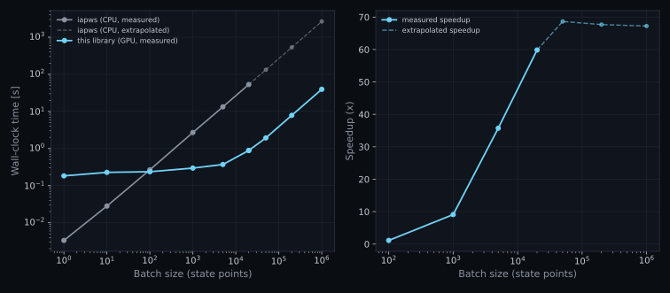
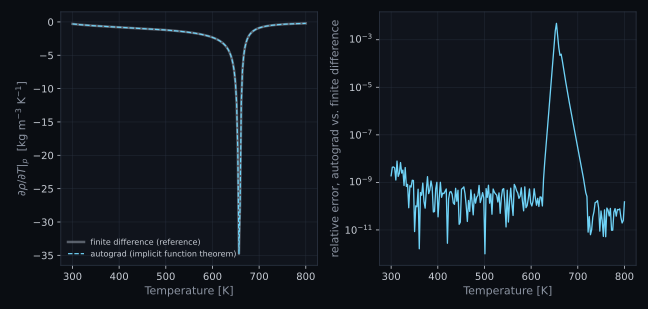
Verification currently includes 41 published IAPWS check values from IAPWS-95 and the viscosity/conductivity releases.
03 / Reactor thermal hydraulics
Physics-Informed Nuclear Thermal-Hydraulic Analysis Code: a Python library for advanced-reactor coolant properties, engineering correlations, fuel-pin heat transfer, single-channel solvers, uncertainty propagation, and ML surrogates.
Supercritical water, sodium, lead, LBE, and supporting solid-material properties under a common interface.
19 empirical engineering correlations with range checking and common NumPy/PyTorch dispatch.
Fuel, gap, clad, cylindrical and annular formulations used by higher-level channel solvers.
Finite-volume and finite-difference infrastructure, property lookup tables, and reusable numerical utilities.
Training-data generation, neural surrogates, differentiable backends, and physics-informed solvers.
Tracked model-form uncertainty and Monte Carlo propagation through downstream thermal-hydraulic calculations.
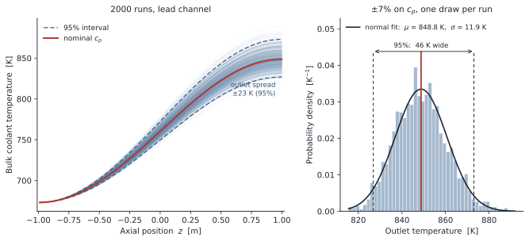
PINTHAC is intended to keep property models, correlations, numerical solvers, and surrogate models consistent enough that they can be swapped or composed without rewriting the surrounding code.
04 / PINTHAC submodule
Finite-volume fuel-pin solvers provide the reference physics; lookup tables and neural operators reduce repeated property and solver cost when large parameter sweeps are needed.
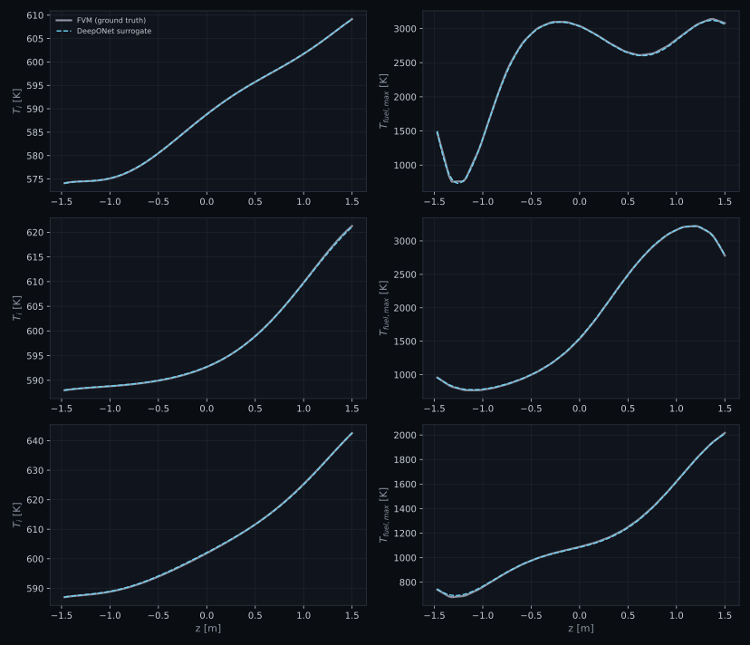
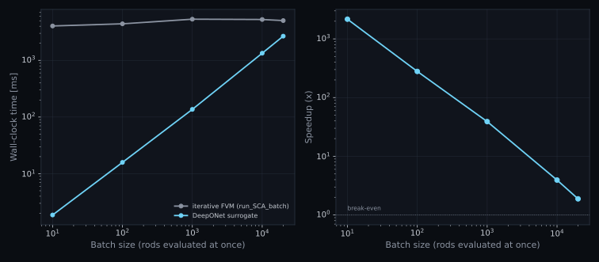
Property-table acceleration: an annular solver dropped from 405 s to 2.7 s while all temperature fields agreed within 0.13 K.
Surrogate inputs: 10+ operating variables plus an arbitrary axial heating profile, returning the full axial thermal solution in a single forward pass.
05 / Experimental engineering
A long-running hands-on project combining high vacuum, high voltage, radiation detection, fabrication, controls, and numerical modeling. I designed and built the dedicated diffusion-pump control stand and integrated the vacuum system around the chamber hardware.
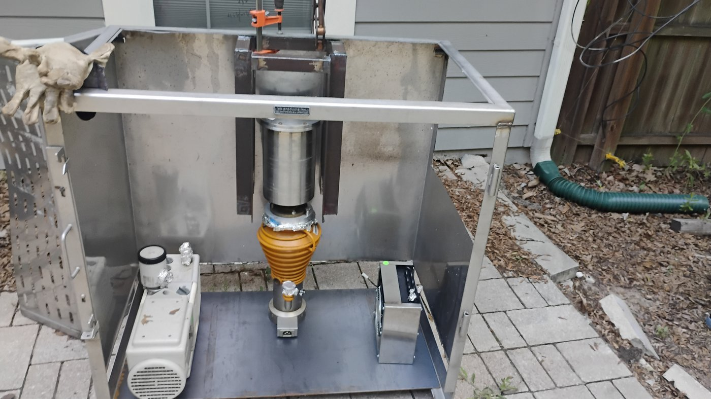
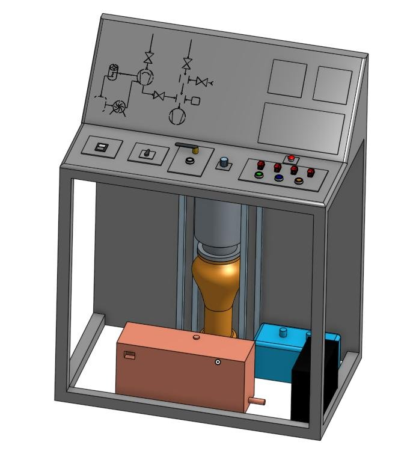
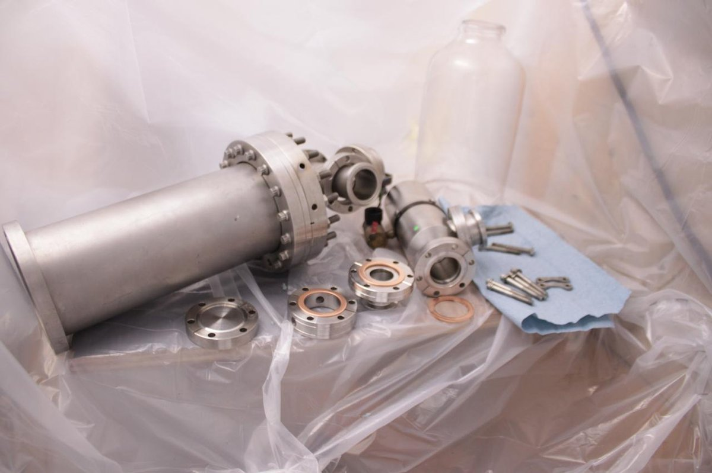
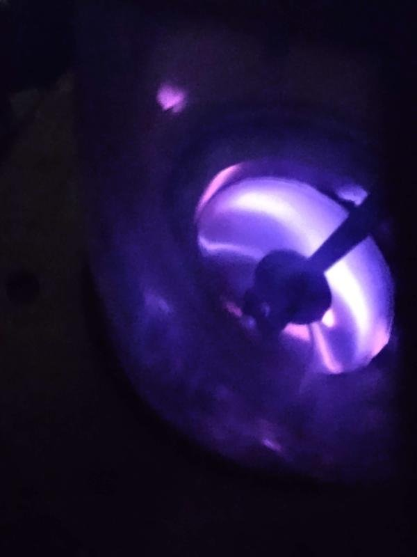
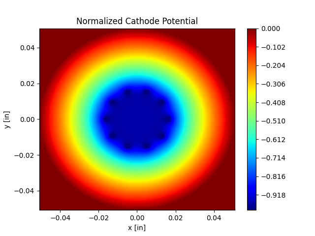
ConFlat/KF vacuum hardware, Viton bell-jar interfaces, diffusion-pump controls, and basic TIG fabrication.
Ludlum survey meters and a He-3 neutron detector, supported by Python models used to estimate device behavior and guide design decisions.
Background
McDevitt Lab, University of Florida — tokamak runaway-electron modeling with physics-informed neural networks.
University of Florida, Gainesville.
Santa Fe College — laboratory setup, safety, equipment, and inventory for courses serving 50+ students.
Santa Fe College.
Tools + recognition
Programming / simulationPython, PyTorch, OpenMC, EES, LaTeX; working knowledge of Fortran and C
Methodsfinite volume, finite difference, PINNs, DeepONet, uncertainty propagation, autograd, GPU vectorization
Lab / instrumentationhigh vacuum, high voltage, NaI(Tl), HPGe, He-3 neutron detection, FTIR, benchtop NMR
Fabricationbasic TIG welding; elementary lathe and milling-machine operation
Dean's List, 2024–present
MIT THINK Program Finalist, 2023
U.S. National Chemistry Olympiad Qualifier, 2023
Outstanding Innovation in STEM, Santa Fe College, 2023
ILR Research Exhibition — 1st place (2022), 3rd place (2023)